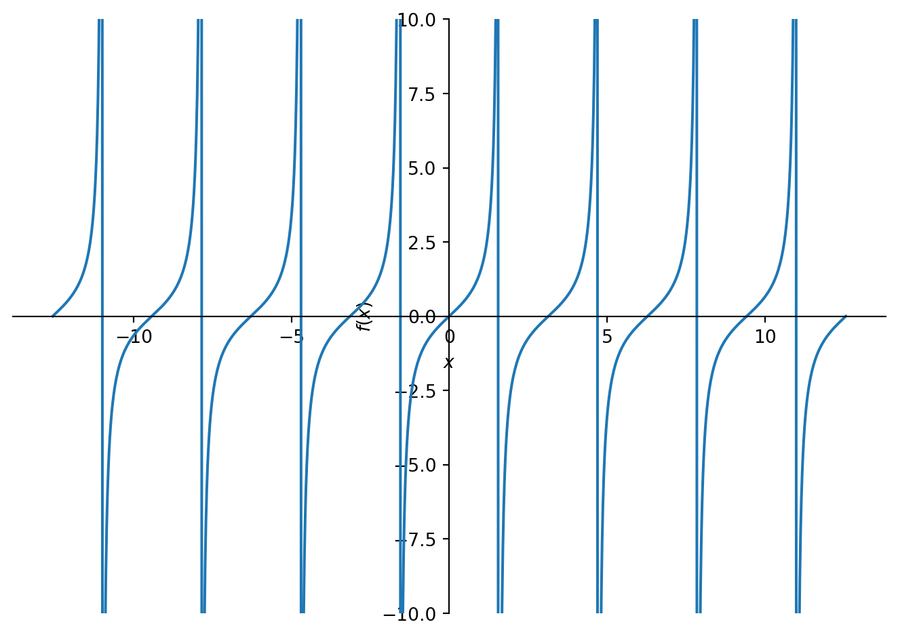

import numpy as np
import matplotlib.pyplot as plt
def centeraxes():
"""Centers axes in the middle"""
ax = plt.gca()
ax.spines['top'].set_color('none')
ax.spines['left'].set_position('zero')
ax.spines['right'].set_color('none')
ax.spines['bottom'].set_position('zero')
return axFunctions
Read: Chapter 1
Terminology
Following is a list of terms that you should know the meaning of.
- What are functions?
- Vertical line test for a function.
- Piece-wise defined functions
- Independent vs. dependent variables.
- Domain vs. range.
- Closed vs. open intervals
Functions: Some properties
- Increasing vs. decreasing
- Even vs. odd
- Linear vs. non-linear
Plotting functions
We can plot a single function as follows:
domain = np.linspace(-5,5, 1000)
func = np.sqrt(domain)
# plt.plot(domain, func)
# plt.plot(domain, func2)
plt.plot(domain, func)
plt.gca().set_aspect('equal')
centeraxes()
plt.show()/tmp/ipykernel_218466/1562034490.py:2: RuntimeWarning: invalid value encountered in sqrt
func = np.sqrt(domain)But we can also plot multiple functions, although this is not necessarily the neatest way, Matplotlib changes colors by default (but we can control it too):
import numpy as np
import matplotlib.pyplot as plt
domain = np.linspace(-1,1, 1000)
func = domain**2
func2 = domain**3
func3 = np.cos(domain)
func4 = np.sqrt(domain)
plt.plot(domain, func)
plt.plot(domain, func2)
plt.plot(domain, func3)
plt.plot(domain, func4)
plt.gca().set_aspect('equal')
centeraxes()
plt.show()/tmp/ipykernel_218466/3654791602.py:8: RuntimeWarning: invalid value encountered in sqrt
func4 = np.sqrt(domain)Some special functions
Linear functions
Absolute value function/Modulus
Power functions
Polynomials
Rational functions
Algebraic functions
Trigonometric functions
import sympy as sp
# Define the variable
x = sp.Symbol('x')
func1 = sp.cos(x)
func2 = sp.sec(x)
func3 = sp.sin(x)
func4 = sp.csc(x)
func5 = sp.tan(x)
func6 = sp.cot(x)
# Define the piecewise function
# Display the piecewise function
sp.plot(func2, func3, (x,-4*sp.pi,4*sp.pi), ylim = (-2,2))
sp.plot(func5, (x,-4*sp.pi,4*sp.pi), ylim = (-10,10))
<sympy.plotting.backends.matplotlibbackend.matplotlib.MatplotlibBackend at 0x146bc48345e0>Inverse Trigonometric
import sympy as sp
# Define the variable
x = sp.Symbol('x')
func1 = sp.acos(x)
func2 = sp.asec(x)
func3 = sp.asin(x)
func4 = sp.acsc(x)
func5 = sp.atan(x)
func6 = sp.acot(x)
# Define the piecewise function
# Display the piecewise function
sp.plot(func2, func3, (x,-4*sp.pi,4*sp.pi), ylim = (-2,2))
<sympy.plotting.backends.matplotlibbackend.matplotlib.MatplotlibBackend at 0x146bc4850910>Exponential functions
Logarithmic functions
Transcendental functions
Piecewise
import sympy as sp
# Define the variable
x = sp.Symbol('x')
# Define the piecewise function
piecewise_func = sp.Piecewise(
(x**2, x < 0), # x^2 when x < 0
(x + 1, (x >= 0) & (x <= 2)), # x + 1 when 0 <= x <= 2
(x**3, x > 2) # x^3 when x > 2
)
# Display the piecewise function
sp.plot(piecewise_func, (x,-3,3))<sympy.plotting.backends.matplotlibbackend.matplotlib.MatplotlibBackend at 0x146bc4850700>